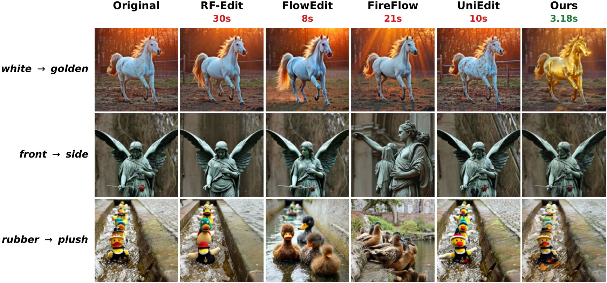
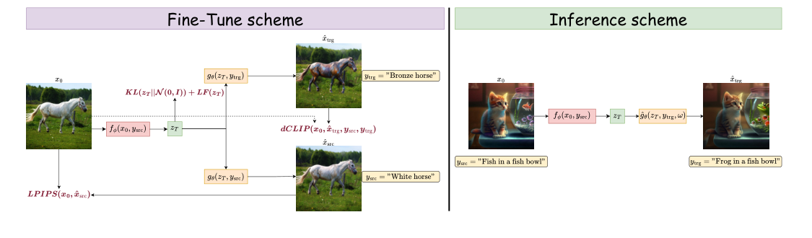
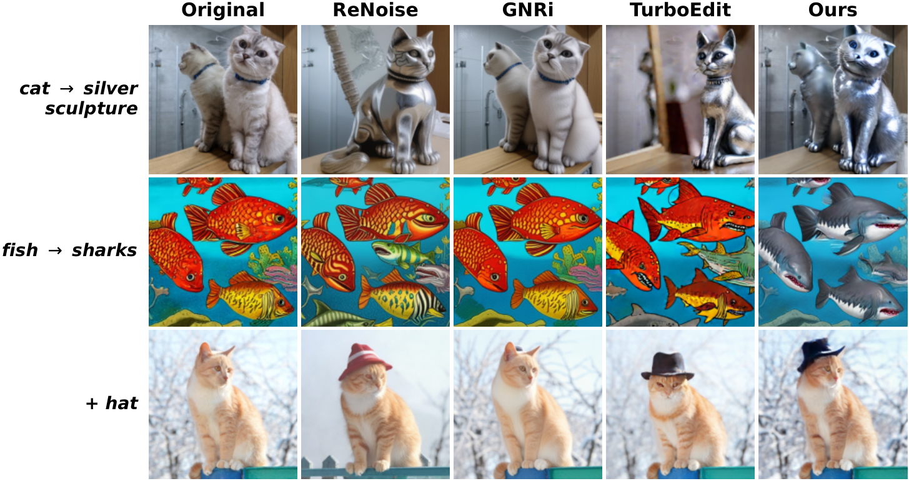

Inverse-and-Edit
Simple and Effective Framework
for Fast Image Editing
1 HSE University2 FusionBrain Lab3 Artificial Intelligence Institute, Innopolis University
Turn a few-step generator into an image editor.
Learn inversion and generation together.
Results from the supplied flow-model comparison. Drag to compare the original image with our edited result.
Compare with other flow editing methods

THE IDEA
Train the whole
round trip.
Few-step models make generation fast. Making them edit a specific image is harder: large sampling steps make standard inversion unreliable.
Inverse-and-Edit turns inversion and generation into a single differentiable cycle. Two LoRA adapters learn together on a frozen backbone, balancing faithful reconstruction, prompt-consistent changes, and a terminal latent that remains compatible with the model’s noise prior.
The same training recipe is evaluated on consistency-distilled, adversarial-distilled, and flow-based generators, across U-Net and DiT architectures.
on a frozen backbone
are fine-tuned
from HQ-Edit
evaluated on PIE-Bench
HOW IT WORKS
One cycle.
Two learned adapters.
Small numbers of steps make end-to-end optimization through inversion and generation practical.
At inference: one inversion pass, one editing pass. No per-image optimization or attention-control modules.
THE TRAINING OBJECTIVE
Preserve content.
Enable meaningful change.
Reconstruction alone admits a shortcut: a latent can keep too much of the image, so the model reconstructs well but barely edits. The complete objective balances three requirements.
Select a term to see its role.
Reconstruction
LPIPS compares the reconstructed image with the source. It teaches the two adapters to preserve source-specific content.
View the complete training and inference diagram

QUALITATIVE RESULTS
Different backbones.
The same recipe.
Change an object, a material, or a detail while retaining the source scene. Explore results from the paper.
Compare with other editing methods

QUANTITATIVE RESULTS
Evaluated on
PIE-Bench.
The highest directional editing score in each evaluated backbone family, with a balance of editability, content preservation, and speed.
| Method | dCLIP ↑ | LPIPS ↓ | ImageReward ↑ | Time, s ↓ |
|---|
HUMAN PREFERENCE STUDY
Edits people prefer.
On Z-Image-Turbo, the method is preferred for overall quality and preservation against four flow editors. Prompt matching is closer to parity and dominated by ties.
200 pairwise comparisons across 50 images. Two initial annotators; expert adjudication of disagreements. Score = wins + ½ ties; 50% is parity. Table 3 and Appendix B.